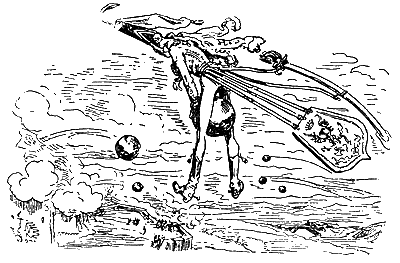
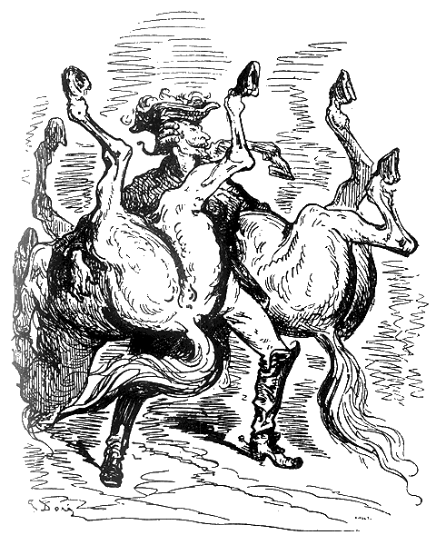

Зиновий Липинский (zinovijs@gmail.com), декабрь 2011
←все статьи и рассказы
Барон Мюнхаузен — лжец или Иммануил Кант
Барона Мюнхаузена принято считать эталоном лгуна. Его рассказы подаются как анекдотические, а имя используется как нарицательное для любого заведомо ложного рассказчика. Но совсем другой образ барона встает перед нами, если взглянуть на его истории через фильтр аллегорий и скрытого смысла.
Вспомните известную историю про утку, подстрелянную через дымоход. Что есть утка для умудреного холостяка (которым и являлся барон Мюнхаузен)? Конечно же, это женщина для нескольких свиданий. В обществе барона на женщин принято охотиться — выезжать при полном параде и пытаться произвести меткий выстрел. Следует ли барон стандартам общества? Нет, он совершает свой выстрел через дымоход, едва приметив свою мишень из окна. Редкая утка проигнорирует такой подход. Скорее наоборот, она сама напросится на дробь и побежит в дымоход, украсив себя яблоками по дороге. Получите, господин барон, готовое блюдо.
Историю с вытягиванием самого себя за волосы не требуется даже пояснять. Только сам человек, взявшись за свою голову, способен вытащить себя и своего коня из моральной трясины и духовного болота.
Более интересной нам представляется история с вишневым деревом на голове оленя. От своих проблем — оленей — люди предпочитают избавляться наглухо, намертво. Желательно с первого раза и используя самую крупную дробь. Совсем иначе поступает барон Мюнхаузен. Он не только оставляет свою проблему существовать, но и позволяет ей обрести новые формы. А спустя время, бывшая проблема уже играет на руку самому барону.

В своем полете из пушки на Луну, барон осуждает современную транспортную систему. Заманивающую обывателя на небесные тела, но в то же время, заставляющую его зарание бронировать билет, загодя приходить на космодром и проходить бесконечные контроли и очереди. Мюнхаузен рубит с плеча — захотел и полетел. Используя для этого первую попавшуюся возможность. Да, это немного безрассудно и опасно. Да, здесь нет привычного комфорта и гарантий успеха. Но барон считает, что мы сами, а не пронырливые дельцы, должны быть королями своих желаний.
Как настоящий дворянин своего времени, барон Мюнхаузен не оставляет без внимания и политическую проблему. На узкой тропинке между львом и крокодилом, в ситуации, когда и правые, и левые предлагают не менее гибельные варианты, он занимает нижнюю позицию. Лев попадает в пасть к крокодилу, проблема решается с минимальными затратами. Тем самым, барон доказывает, что однобокие взгляды политических партий мешают им найти выход из кризиса.
В истории, где барон привязывает лошадь к столбику посреди снежного поля, он критикует слепой прогресс. На утро лошадь оказывается привязанной к шпилю ратуши. И ее не так легко снять оттуда.
Но не только критику и противоречия навязывает нам барон. Вспомните историю, в которой он заткнул пробоину корабля задней частью своего тела и закурил. Этим он хочет нам показать, что в любой ситуации есть место нелепой шутке и хорошему настроению. Именно поэтому все его рассказы про уток и оленей, про полеты и пробоины, читаются нами с улыбкой на лице.
Барон Мюнхаузен — великий философ и большой учитель, скрывающийся под маской обыкновенного прохиндея.
